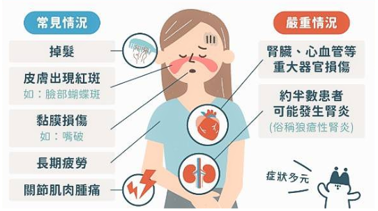
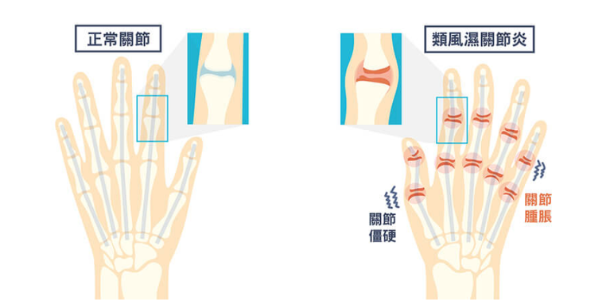
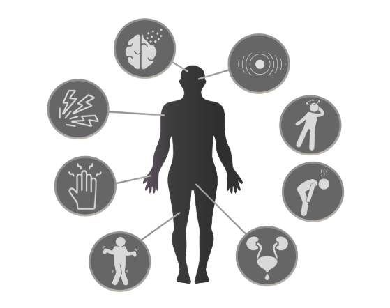
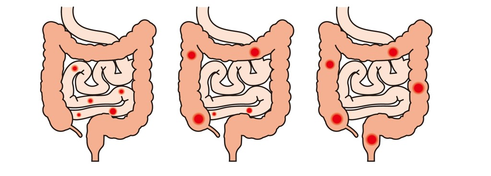

介紹
免疫系統是人體的防禦系統，主要作用是識別和摧毀入侵的病原（如細菌、病毒、真菌）以及異常或受損的細胞（如癌細胞）。免疫系統由多種細胞、器官和分子組成，能夠協同工作，保護身體免受感染和疾病。
紅斑狼瘡
-
一種慢性的自體免疫性疾病，免疫系統錯誤地攻擊身體的正常細胞和組織，導致皮膚、關節、腎臟、心臟、肺部等的損害。
-
病因
1.遺傳因素：具有家族史的人患病風險較高，特定基因（如與免疫反應相關的基因）可能會增加患病的風險。 2.免疫系統異常：正常情況下，免疫系統應該區分自我和外來物質，但在紅斑狼瘡中，免疫系統對自體細胞產生抗體，攻擊正常組織。 免疫反應異常導致炎症和組織損傷，進一步引發病變。 3.性別：紅斑狼瘡多發於女性，尤其是在生育年齡的女性中。 4.環境因素：紫外線曝曬、感染（如EB病毒）及某些藥物可觸發或加劇紅斑狼瘡發作，導致自體免疫反應或藥物誘發性紅斑狼瘡。 5.其他因素：情緒或身體壓力可誘發紅斑狼瘡發作，吸煙則可能增加發病風險並加劇病情，兩者都對免疫系統產生負面影響。
- 症狀
1.皮膚症狀：蝴蝶疹、光敏感、皮膚潰瘍。 2.關節症狀：關節疼痛、腫脹，常見於手、膝、肘等部位。 3.腎臟發炎：狼瘡性腎炎，可能導致蛋白尿或血尿，嚴重時可引起腎衰竭。 4.心肺症狀：心包炎、胸膜炎、肺炎等心肺問題。 5.神經系統症狀：頭痛、癲癇、精神混亂、記憶力減退等。 6.全身症狀：極度疲勞、發燒、食慾減退、體重減輕等。- 預防及管理
1.避免陽光曝曬:紫外線是紅斑狼瘡的觸發因素之一，應避免長時間暴露在陽光下，尤其是中午時段。 2.控制壓力： 情緒和身體上的壓力可能觸發紅斑狼瘡的發作。學習壓力管理技巧，如冥想、深呼吸、運動等，有助於維持情緒穩定。 3.保持健康的生活方式：健康的飲食、適度的運動、充足的睡眠對維護免疫系統的正常運作至關重要。避免不良習慣，如吸煙和過度飲酒。 4.定期監測健康狀況：定期進行醫療檢查，及時檢測腎功能、血壓等，發現問題能早期干預。 5.避免某些藥物：一些藥物（如某些抗生素、抗癲癇藥物）可能引發類似紅斑狼瘡的反應。在醫生指導下使用藥物，避免自行使用可能引發過敏或反應的藥物。 6.接種疫苗： 定期接種疫苗，尤其是流感和肺炎疫苗，有助於預防感染，減少因感染引起的免疫系統反應。類風濕性關節炎
-
一種慢性自體免疫性疾病，主要影響關節，導致關節的炎症、腫脹、疼痛和功能障礙。
- 病因
1.免疫系統異常：類風濕性關節炎是一種自體免疫性疾病，意味著免疫系統錯誤地攻擊身體自身的正常組織，尤其是關節的滑膜。免疫系統將關節內的正常細胞誤認為外來物質，導致炎症和組織損傷。 2.遺傳因素：某些基因（如HLA-DRB1基因）的變異可能使個體更易患病。具有家族史的人患類風濕性關節炎的風險較高。 3.環境因素：吸煙、感染及荷爾蒙可能增加類風濕性關節炎風險，尤其吸煙在有遺傳易感性的個體中作用顯著，女性發病風險較高。 4.激素因素：雌激素被認為在女性的免疫系統中起著促進作用，可能會增加類風濕性關節炎的風險。 5.其他因素：肥胖可能增加類風濕性關節炎的發病風險，並影響疾病活動度。類風濕性關節炎多見於30-60歲成年人。。
- 症狀
1.關節症狀：關節疼痛和腫脹、晨僵、關節變形。 2.全身症狀：疲勞、發燒、體重減輕。 3.皮下結節：關節部位附近出現無痛的硬塊，稱為風濕性結節。 4.其他器官：可能導致肺部間質性疾病或炎症，並引發眼睛乾燥症或眼部炎症，影響患者的呼吸和視力功能。
- 預防及管理
1.保持健康體重：控制體重有助於減少關節負擔，降低肥胖引發類風濕性關節炎的風險。 2.避免吸煙：吸煙是類風濕性關節炎的重要風險因素，戒煙可減少發病的風險。 3.健康飲食：均衡飲食，增加抗炎食物（如omega-3脂肪酸），有助於維護免疫系統健康。 4.適量運動：定期運動有助於強化關節周圍的肌肉，減少關節損傷。 5.避免過度勞累：過度使用關節可能加重類風濕性關節炎症狀，應避免過度勞動，適當休息。
多發性硬化症
-
是一種慢性中樞神經系統自體免疫性疾病，主要影響大腦、脊髓和視神經。其特徵是免疫系統錯誤地攻擊和破壞神經纖維周圍的髓鞘，這層髓鞘負責加速神經信號的傳遞，當髓鞘受損時，神經信號傳遞受到干擾，導致各種神經學症狀。
- 病因
1.病毒感染：某些病毒（例如Epstein-Barr病毒）可能會引發免疫系統的異常反應，並與多發性硬化症的發病有關。 2.維生素D缺乏：維生素D對免疫系統有調節作用，缺乏維生素D可能會增加多發性硬化症的風險。 3.吸菸：吸煙被認為是增加多發性硬化症風險的環境因素之一，可能通過誘發免疫系統異常反應來影響疾病的發展。 4.地理因素：多發性硬化症的發病率在不同地區差異顯著，高緯度地區（例如北歐、加拿大等）的人群患MS的風險較高，這些地區日照時間較少。
- 症狀
1.運動症狀：肌肉無力、協調障礙、肌肉痙攣。 2.感覺異常：手腳麻木或刺痛、燒灼感、觸覺異常。 3.視力問題：視神經炎、視神經炎。 4.認知和情緒症狀：記憶力減退、注意力不集中、情緒波動。 5.平衡和協調問題：走路不穩、頭暈或眩暈。 6.膀胱和腸道問題：排尿困難、便秘或腹瀉。 7.發音困難：語言不清晰或發音不準確，影響交流。
- 預防及管理
1.抗發炎飲食：抗發炎飲食有助於預防多發性硬化症，應增加omega-3脂肪酸、抗氧化食物、全穀類和維生素D，同時減少飽和脂肪、加工食品和糖分攝取，有助於降低免疫系統的過度反應與炎症。 2.注射維生素B12：注射維生素B12有助於支持神經系統健康，維持髓鞘的完整性，並可能對預防多發性硬化症發作有益。 3.保持健康體重：肥胖可能加重多發性硬化症的症狀，保持適中的體重有助於減少並發症。
乾燥症
-
主要特徵是免疫系統錯誤攻擊身體的外分泌腺，尤其是眼睛和口腔的腺體。這種疾病通常導致口乾、眼乾等症狀，並可能影響其他器官，如皮膚、關節、肺、腎臟和肝臟。
-
由以下多因素交互作用而發生疾病：
1.基因：乾燥症有遺傳傾向，由於基因變異導致免疫調控的機制缺損，碰到外界刺激免疫系統容易產生失調。 2.環境：作息不正常或有重大感染（例如：病毒感染）。 3.荷爾蒙：乾燥症的男女比是1：8，且好發在女性停經前後。
- 症狀：
1.眼乾：眼睛感到乾澀、刺痛、灼熱或有異物感，並且容易出現紅眼。 2.口乾：口腔乾燥，可能導致吞嚥困難，語言不清，並增加蛀牙、口腔感染和口腔潰瘍的風險。 3.乾燥：鼻乾、陰道乾燥、喉嚨乾燥。 4.關節疼痛和炎症：常見的症狀包括關節痛、僵硬、腫脹，尤其是在手指、膝蓋和手腕等部位。 5.疲勞：患者經常感到極度疲倦，這種疲勞感通常無法通過休息改善，並且會影響日常生活。 6.皮膚乾燥：由於皮膚的分泌功能受損，患者可能會經常感到皮膚乾燥、瘙癢或脫皮。 7.唾液腺腫脹：在某些情況下，唾液腺（特別是腮腺）可能會腫脹，導致臉部不適或痛感。 8.吞嚥困難：由於口腔乾燥，患者可能會感到吞嚥食物或飲料時有困難，且易感到喉嚨卡住。 9.肺部症狀：可能出現咳嗽、呼吸急促或胸痛等肺部症狀，這是由於乾燥症影響了呼吸道黏膜。 10.神經系統症狀：一些患者可能會經歷頭痛、頭暈、神經痛（如手腳麻木或刺痛）等神經系統症狀。 11.腎臟、肝臟或胃腸症狀：乾燥症可能影響腎臟、肝臟或胃腸道，導致相應的功能障礙。 12.淋巴結腫大：一些患者可能會發現淋巴結腫大，尤其是在頸部或腋下。- 預防及管理：
1.維持口腔健康：定期刷牙、使用牙線並檢查牙齒，預防齲齒及牙周病，咀嚼無糖口香糖可增加唾液分泌，改善口乾症狀。 2.保持眼睛濕潤：使用人工淚液緩解乾澀，避免乾燥環境並使用加濕器，外出戴防風眼鏡，保護眼睛免受灰塵與乾燥空氣刺激。 3.飲食調整：多喝水保持口腔濕潤，均衡飲食攝取Omega-3和抗氧化食物，避免刺激性食物及減少咖啡因和酒精，減輕口乾不適。 4.促進良好的生活習慣：戒菸減少口乾與健康風險，避免長時間說話減輕口腔壓力，定期運動增強免疫系統，維持整體健康。 5.管理免疫系統健康：加強手部衛生預防感染，控制糖尿病等慢性病減輕乾燥症狀，定期健康檢查，早期發現異常並及時處理。 6.調整生活環境：使用加濕器或水盆增加室內濕度，減少空調與暖氣直接吹拂，避免過度乾燥，防止水分流失保護黏膜。 7.醫學：出現乾燥症狀應及時就醫，早期診斷治療，依醫囑使用免疫調節劑或眼藥水，緩解症狀並保護器官功能。克羅恩病
-
是一種慢性發炎性腸道疾病（IBD），主要影響消化道，常見於小腸末端和大腸。
- 類型
1.炎症型：腸道出現炎症，伴有腹瀉。 2.狹窄型：腸道的瘢痕及纖維症導致堵塞，產生痙攣性腹痛。 3.瘺管型：臨近的腸道之間，或甚至在腸及皮膚之間形成腹腔或管道。
- 症狀
1.腹痛與腹部不適：特別是在右下腹部，因為疾病常影響小腸末端和大腸。 2.腹瀉：持續性腹瀉，可能伴隨血便或黏液。 3.體重減輕：由於營養吸收不良或食慾下降，導致體重減輕。 4.疲倦與虛弱：長期發炎會引發疲勞感。 5.發熱：由於腸道發炎引起，尤其在疾病加劇時，可能會有輕度至中度發熱。 6.食慾不振：消化不良或腹部不適會抑制食慾。 7.營養吸收不良：特別是當小腸受累時，可能會引起貧血、維生素及礦物質缺乏。 8.關節疼痛：尤其是在膝蓋、手肘等大關節處，部分患者會經歷關節炎症狀。 9.皮膚問題：如結節性紅斑（紅色硬塊）、皮膚潰瘍等。 10.口腔潰瘍：一些患者會有口腔內的潰瘍。 11.瘻管與膿腫：腸道穿孔或不正常的連接處（瘻管），膿腫等併發症。
- 預防及管理
1.調整生活方式：調整飲食、少食多餐、避免引發發作的食物，必要時補充維生素。戒煙、定期鍛煉有助於減少發作和緩解疲勞。 2.藥物治療：藥物治療克羅恩病可使用抗炎藥物、免疫調節劑、生物製劑及類固醇，幫助減少炎症、控制病情並預防復發。 3.手術治療：手術治療克羅恩病通常用於切除受損腸段，緩解症狀和併發症。
- 症狀：
- 症狀